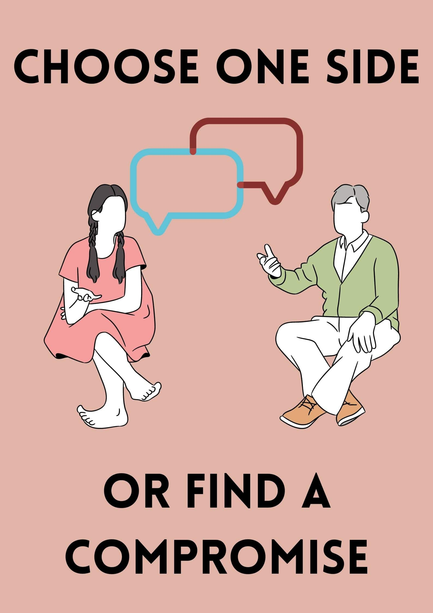
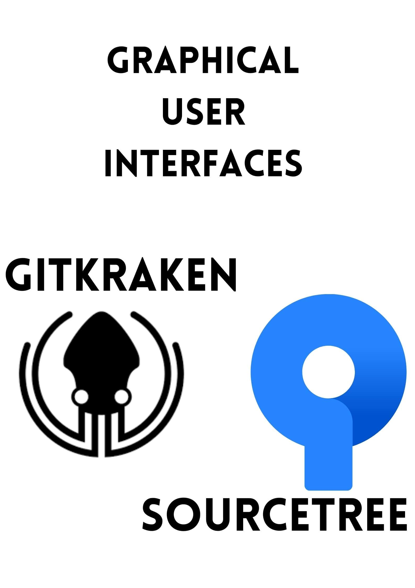

Conflict Resolution In Git
Find the compromise!


Introduction
When working with Git, I think that one of the most intimidating features to master is managing git merge conflicts. Unsurprisingly, when many developers contribute to the same project, there will be different versions of the same code and conflicts will arise. Git being a version control software has allowed for developers to quickly resolve conflicts.
Content Page
How Conflicts Arises
Take for instance, when merging your local branch into master, if all the changes in the code occur at different locations (different files or same file different line of code), Git will automatically merge commits seamlessly.
However, when working in big groups, there is a higher probability of 2 or more developers editing the exact same part of the code. This is how merge conflicts crop up. If Git recognises a piece of code (exactly in the same line) that is changed in both branches, it will not be able to intuitively integrate them. Git doesn’t know which of the edits to use as the new master. As such, Git will require user intervention in order to proceed.
Let’s replicate an error so that we can document how to resolve the conflicts one step at a time. Assume that I have just made changes to the same line of code in my local as with the remote version. I execute the command
git fetch origin
Which fetches the origin branch from remote. Now I will attempt to merge the 2 branches with the command
git merge origin/master
And as we planned, this error pops up in the terminal
Auto-merging main.py
CONFLICT (content): merge conflict in main.py
Automatic merge failed; fix conflicts and then commit the result.
You can double check the files that have conflicts by executing the command
git status
And the output should look something like this
On branch main
You have unmerged paths.
(fix conflicts and run "git commit")
(use "git merge --abort" to abort the merge)
Unmerged paths:
(use "git add ..." to mark resolution)
both modified: main.py
How to Resolve Conflict
As seen above, Git will highlight the conflicted file. The rough outline to fix this problem is to first open your favourite code editor, locate the file and the conflicted code block. Ask yourself which code block you would like to retain as part of the merge. After picking “mine” or “theirs” code to keep, commit the changes and proceed with the merge. “Mine” refers to the code block in your current working branch and “theirs” refers to the branch you would like to merge with.
Still feeling unsure? Worry not let’s continue with our example to get a better understanding of what is happening and the particular steps to take.
I am sure the first question to ask in this case is “where is the conflict?”. In your editor, you will find conflict markers which indicate where the conflict is and to differentiate between the 2 versions.
<<<<<<< HEAD
print(“coding cucumbers icon is so cute!”)
=======
print(“coding cucumbers icon looks like a creep!”)
>>>>>>> origin/master
The code chunk between <<<<<< and ====== refers to ‘mine’. You can also tell that it is your code (not only because it looks like the code you wrote haha) but because of the “HEAD” which refers to your local branch, that is at the head of the commit. The code chunk between ====== and >>>>>> refers to ‘theirs’ and is also indicated by “origin/master”.
The next step is to decide which code chunk you would like to keep. If you realise that the code written by your fellow developer is more efficient, you would discard your changes and keep his. But in this case, I think that the Coding Cucumber icon is cute, as such I will delete the 3 conflict markers and the unwanted line of code (print(“coding cucumbers icon looks like a creep!”)).
If you realise that by combining the 2 code blocks, you can write an even better code block, you can also incorporate changes from both code chunks. For the example you can replace the code with
print(“coding cucumbers icon is creepy but somehow cute!”)
Repeat these steps for all subsequent conflicts in the file. Don’t forget to stage and commit the new changes to the branch and that is it! We resolved our git merge conflict.
Additional Notes
In order to make this conflict resolution even easier, there are software tools to help such as GitKraken or SourceTree. SourceTree is free to download but GitKraken will cost you. Do note that these 2 softwares are actually Graphical User Interface (GUI)s for Git that have built in conflict resolver tools, which might be more intuitive to use compared. Switching to SourceTree or GitKraken also means you won’t be using the command line for Git features but rather their designed platform.
At times, when the conflict resolution gets too complicated and you are just confused and stupefied, you can always use the command
git merge --abort
This will reverse the changes made to the file and return it to the state before the merge. With this command in mind, you don’t have to worry about breaking anything and you can try to merge the 2 branches again!
Here is one more command that might come in handy
git reset --hard
This command resets the code to the version of the latest commit. In the event that you resolved the merge conflict and have yet to commit code but suddenly realised that you made a mistake, you can still easily undo it and start again. Please note that this command throws away all your other uncommitted changes as well.
Conclusion
I hope this article came in useful, especially if you are trying to put out the fires of a merge conflict right now. All in all, I think merge conflicts are not a bad thing, they allow for you to figure out the code that is most appropriate for your project and only serves to improve it! Personally, I am quite conflict averse (not limited to git merge conflicts haha), but I am starting to learn that conflicts can be settled in a calm and civilised manner. Slowly but surely, I am tearing down the frightening image of conflict and embracing it as part of life (or part of the development process)! Stay cool Cucumbers!